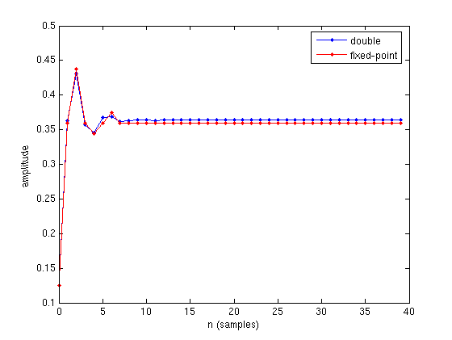
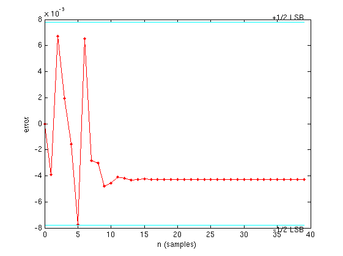
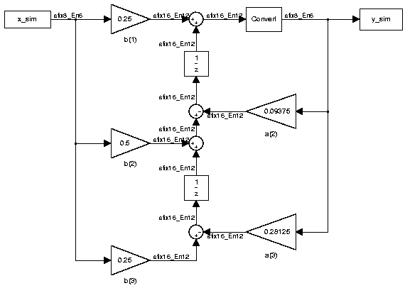

Shows the development and verification of a simple fixed-point algorithm.
This example shows the development and verification of a simple fixed-point filter algorithm.
First, the algorithm is developed and simulated in double-precision floating-point. Second, the algorithm is converted to fixed-point by changing the data type of the variables to fixed-point: the M-code for the algorithm itself is identical to the floating-point code. Finally, the fixed-point results are compared to the floating-point results and plotted.
We develop our algorithm in double-precision floating-point.
b = [ 0.25 0.5 0.25 ]; a = [ 1 0.09375 0.28125 ]; x = 0.5*ones(40,1); y = zeros(size(x)); z = [0;0];
for k=1:length(x) y(k) = b(1)*x(k) + z(1); z(1) = (b(2)*x(k) + z(2)) - a(2)*y(k); z(2) = b(3)*x(k) - a(3)*y(k); end
ydouble = y;
We convert variables to fixed-point and run the algorithm again.
In this example, the numeric type of the state variable z is chosen so that it will hold the products in full-precision. However, in some applications, the numeric type of the states is cast back to the numeric type of the data x.
% fi(Data, Signed, WordLength, FractionLength)
b = fi(b, 1, 8, 6);
a = fi(a, 1, 8, 6);
x = fi(x, 1, 8, 6);
y = fi(zeros(size(x)), 1, 8, 6);
z = fi([0;0], 1, 16, 12);
for k=1:length(x) y(k) = b(1)*x(k) + z(1); z(1) = (b(2)*x(k) + z(2)) - a(2)*y(k); z(2) = b(3)*x(k) - a(3)*y(k); end
In this example, we have redefined the fixed-point variables with the same names as the floating-point so that we could inline the algorithm code for clarity. However, it is a better practice to enclose the algorithm code in an M-file function that could be called with either floating-point or fixed-point variables. See filimitcycledemo.m for an example of writing and using a datatype-agnostic algorithm.
n = (0:length(y)-1)'; plot(n,ydouble,'.-b',n,y,'.-r') legend('double','fixed-point') xlabel('n (samples)'); ylabel('amplitude')
e = double(lsb(y)); plot(n,double(y)-ydouble,'.-r', ... [n(1) n(end)],[e/2 e/2],'c', ... [n(1) n(end)],[-e/2 -e/2],'c') text(n(end),e/2,'+1/2 LSB','HorizontalAlignment','right','VerticalAlignment','bottom') text(n(end),-e/2,'-1/2 LSB','HorizontalAlignment','right','VerticalAlignment','top') xlabel('n (samples)'); ylabel('error')
If you have Simulink and Simulink Fixed Point, you can run this model, which is the equivalent of the algorithm above. The output, y_sim is a fixed-point variable equal to the variable y calculated above in M-code.
As in the M-code, the fixed-point parameters in the blocks can be modified to match an actual system; these have been set to match the M-code in the example above. Double-click on the blocks to see the settings.
if license('test','Fixed-Point_Blocks') % Set up the From Workspace variable x_sim.time = n; x_sim.signals.values = x; x_sim.signals.dimensions = 1; % Run the simulation sim('fitdf2filter_demo') % Open the model fitdf2filter_demo % Verify that the Simulink results are the same as the M-file isequal(y, y_sim) end
ans =
1
 In order to simplify the example, we have taken the default math parameters: round-to-nearest, saturate on overflow, full precision products and sums. We can modify all of these parameters to match an actual system.
In this example, we have concentrated on rounding errors and not explored the effects of overflow. We are purposefully using low precision so that the effects of the quantization will be evident in the plots.
The settings were chosen as a starting point in algorithm development. Save a copy of this M-file, start playing with the parameters, and see what effects they have on the output. How does the algorithm behave with random input? See the help for fi, fimath, and numerictype for information on how to set other parameters, such as rounding mode, and overflow mode.